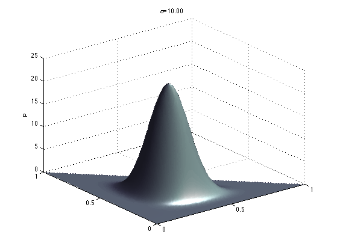
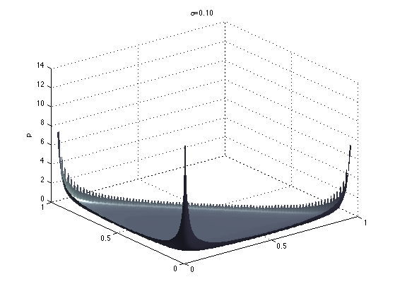

Plot a Dirichlet distribution
Here we plot the dirichlet distribution as a function of a three dimensional alpha vector, which we can do as the distribtion lives on a lower dimensional simplex due to the sum to one constraint.
% This file is from pmtk3.googlecode.com alphas = [10 0.1]; for alpha=alphas(:)'
xyrange = [0 1 0 1]; model.alpha = alpha; npoints = 100;
The dirichletLogprob function returns NaNs for values that lie outside of the simplex, which plot() ignores giving us the nice simplex plot.
figure(); % when alpha < 1 plots of exp(logp) are % ugly due to numerical error, but for alpha = 0.1, the plots of % p and logp look very similar, except that exp(logp) is more sharply % peaked around the corners. So we use logp. if 0 % alpha<1 useLog = true; else useLog = false; end if useLog plotSurface(@(X)dirichletLogprob(model, X), xyrange, 'npoints', npoints); else plotSurface(@(X)exp(dirichletLogprob(model, X)), xyrange, 'npoints', npoints); end shading interp; camlight right; lighting phong; %view([-32 50]); set(gca, 'xtick', 0:0.5:1, 'ytick', 0:0.5:1); if useLog zlabel('log(p)'); else zlabel('p') end title(sprintf('%s=%3.2f', '\alpha', model.alpha)) printPmtkFigure(sprintf('DirSimplex%d', model.alpha*10)) 
end